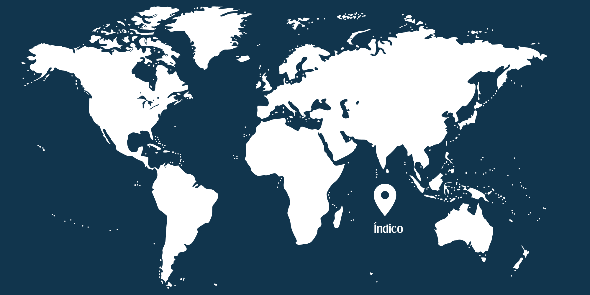
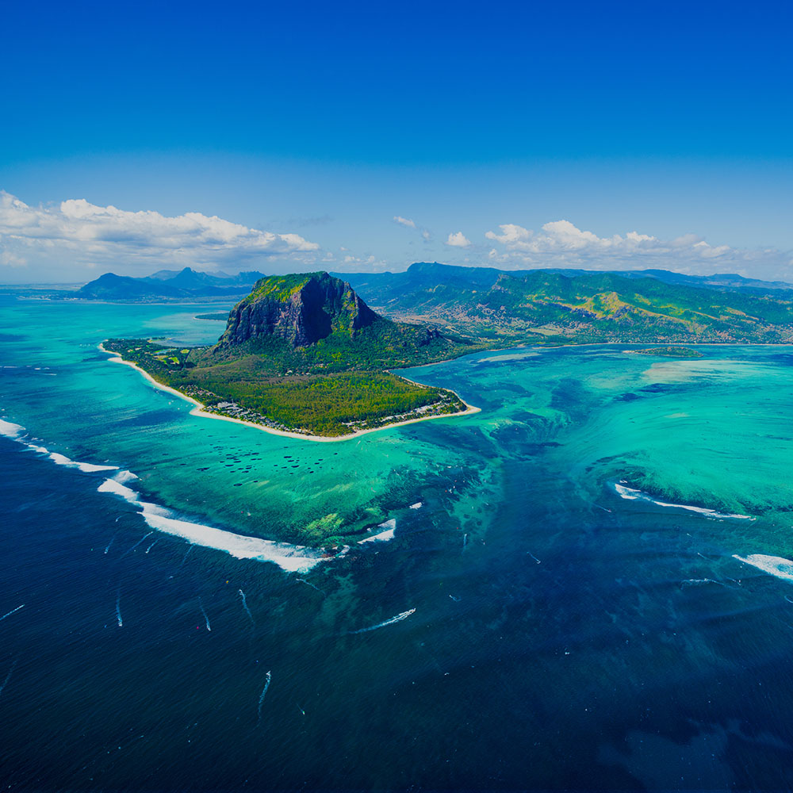
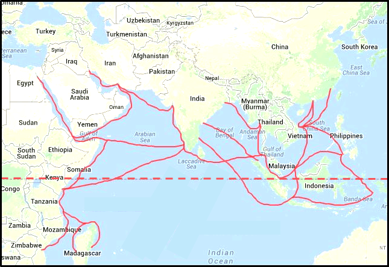
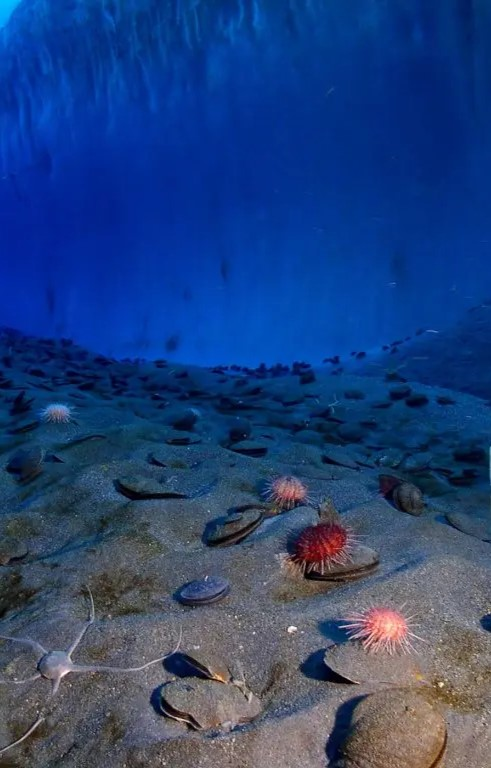
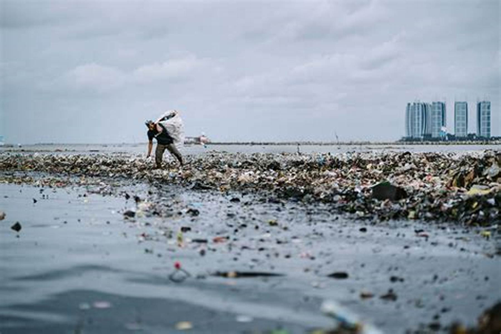

Introdução
O Oceano Índico, um dos maiores corpos de água do planeta, possui uma importância geopolítica e econômica inegável. Banhando as costas de países como Índia, Indonésia, África do Sul e Austrália, suas águas sustentam uma vasta gama de atividades comerciais, desde o transporte marítimo até a pesca e o turismo. Além disso, é uma importante fonte de recursos naturais, incluindo petróleo, gás e minerais, que desempenham um papel crucial na economia global.
Do ponto de vista ambiental, o Oceano Índico é um ecossistema diversificado e frágil. Abriga recifes de coral deslumbrantes, como os encontrados na região dos Maldivas e nas Seychelles, que são vitais para a biodiversidade marinha e para a proteção das zonas costeiras contra a erosão. No entanto, esses ecossistemas enfrentam ameaças significativas, como a poluição, a pesca predatória e as mudanças climáticas, que colocam em risco não apenas a vida marinha, mas também as comunidades humanas que dependem desses recursos.
Além disso, o Oceano Índico desempenha um papel essencial no clima global, influenciando os padrões climáticos regionais e até mesmo as monções que afetam milhões de pessoas em países como a Índia e a Indonésia. Portanto, sua preservação e gestão sustentável são imperativas não apenas para a saúde dos ecossistemas marinhos, mas também para a estabilidade socioeconômica e climática das regiões costeiras e além.
- Anomalia do Oceano Índico O Oceano Índico é conhecido por uma característica geofísica intrigante chamada de "Anomalia do Oceano Índico".
- Ciclo das Monções: O Oceano Índico desempenha um papel crucial no ciclo das monções que afeta vastas áreas da Ásia, incluindo a Índia, o Sudeste Asiático e partes da África.
- Hotspots de Biodiversidade: Além dos recifes de coral e das ilhas isoladas, o Oceano Índico abriga vários hotspots de biodiversidade marinha, incluindo áreas de alta concentração de espécies marinhas.
- Ameaças Ambientais: Infelizmente, o Oceano Índico enfrenta várias ameaças ambientais, incluindo a poluição plástica, a acidificação dos oceanos e o aumento das temperaturas da água devido às mudanças climáticas.
- A Ilha da Reunião: Esta ilha vulcânica no sudoeste do Oceano Índico é conhecida por abrigar uma das formações geológicas mais impressionantes do mundo: o Piton de la Fournaise.
- Oceano de Diversidade Linguística: Devido à sua vasta extensão e à diversidade de países que banha, o Oceano Índico é uma região onde se fala uma grande variedade de línguas. Desde o swahili na África Oriental até o tâmil na Índia e o malaio na Indonésia, esta área é um caldeirão linguístico fascinante.
- O Enigma do Voo MH370: Em março de 2014, o voo Malaysia Airlines MH370 desapareceu enquanto sobrevoava o Oceano Índico, desencadeando uma das maiores operações de busca e resgate da história da aviação.
- Riqueza Cultural e Religiosa: s margens do Oceano Índico abrigam uma riqueza de culturas e religiões, desde as tradições antigas das civilizações costeiras da Índia e da África até as influências islâmicas da região do Golfo Pérsico.

Localização e Extensão
Geografia

O Oceano Índico, com sua vasta extensão de aproximadamente 73,556 milhões de quilômetros quadrados, ocupa uma posição estratégica entre os continentes da África, Ásia, Austrália e Antártida. Banhando as costas de numerosos países, incluindo Índia, Indonésia, África do Sul e Austrália, suas águas são essenciais para o comércio, a pesca e o turismo em toda a região. Como uma das principais rotas marítimas do mundo, o Oceano Índico serve como elo entre o Oceano Atlântico, a leste, e o Oceano Pacífico, a oeste, através dos Estreitos de Malaca. Além disso, é cruzado pelo Equador e pelo Meridiano de Greenwich, o que confere importância tanto em termos de navegação marítima quanto de sistemas de coordenadas geográficas globais.
A importância geográfica do Oceano Índico vai além de sua extensão impressionante. Como uma via de comunicação vital, o oceano desempenha um papel fundamental no comércio internacional, facilitando o transporte de mercadorias entre os continentes da Ásia, África, Europa e Oceania. Além disso, suas águas são essenciais para a pesca, fornecendo sustento para milhões de pessoas que dependem da pesca como fonte de alimento e renda em toda a região costeira.
Em termos de extensão, o Oceano Índico abrange uma diversidade de climas e paisagens, desde os trópicos no norte até as regiões temperadas no sul. Essa variedade de ecossistemas oferece habitats únicos para uma vasta gama de vida marinha, incluindo espécies endêmicas e ameaçadas de extinção. A preservação desses ambientes marinhos é essencial não apenas para a saúde dos ecossistemas locais, mas também para a sustentabilidade global dos recursos marinhos e para o bem-estar das comunidades que dependem deles.
Sua localização estratégica e sua imensa extensão abrigam uma diversidade impressionante de habitats marinhos, desde recifes de coral exuberantes e ilhas tropicais até regiões abissais e mares temperados. Esta ampla gama de ecossistemas sustenta uma rica biodiversidade marinha, tornando o Oceano Índico não apenas um marco geográfico, mas também um fator crucial na regulação do clima, na economia e na cultura das regiões costeiras e além.
História
Antiguidade até a Era dos Descobrimentos
Durante a antiguidade, o Oceano Índico desempenhou um papel vital no comércio entre o Oriente e o Ocidente. As civilizações que se estabeleceram ao longo de suas margens se beneficiaram da abundância de recursos marinhos e das oportunidades comerciais que o oceano proporcionava. As rotas comerciais marítimas, como a Rota do Incenso, ligavam o subcontinente indiano à península Arábica e ao Mediterrâneo, facilitando o comércio de especiarias, perfumes, seda e outras mercadorias valiosas.

No entanto, foi durante a Era dos Descobrimentos que o Oceano Índico testemunhou uma intensificação significativa da exploração europeia. Os navegadores portugueses, em particular, desempenharam um papel proeminente na expansão dos horizontes marítimos europeus. Liderados por figuras como Vasco da Gama, os portugueses contornaram o Cabo da Boa Esperança e estabeleceram rotas comerciais diretas com a Índia, desafiando o monopólio árabe nas especiarias. Essas expedições não apenas abriram novas rotas comerciais, mas também levaram à colonização de territórios ao longo das costas do Oceano Índico, alterando irrevogavelmente o curso da história regional e global.
Colonização e Intercâmbio Cultural
A colonização europeia ao redor do Oceano Índico durante os séculos seguintes à Era dos Descobrimentos transformou profundamente a paisagem cultural e social da região. Potências coloniais como Portugal, Espanha, Holanda, França e Inglaterra estabeleceram uma presença significativa ao longo das costas do oceano, criando colônias e postos comerciais que serviram como centros de troca cultural e comercial. Esse contato entre culturas foi bidirecional, resultando em uma mistura única de tradições locais e influências europeias. Além do comércio de bens materiais, houve uma troca de ideias, conhecimento e crenças religiosas. A disseminação de idiomas como o português, holandês e inglês, bem como a propagação do cristianismo, influenciaram profundamente as comunidades locais ao longo das margens do Oceano Índico. Da mesma forma, as culturas locais contribuíram para a diversidade cultural das colônias europeias, incorporando elementos da culinária, música, arte e tradições religiosas locais.
Embora tenha havido conflitos e tensões entre as potências coloniais e as civilizações locais, esse intercâmbio cultural deixou um legado duradouro na história e na identidade das comunidades costeiras. Hoje, vemos vestígios desse legado nas línguas faladas, na arquitetura, nas festividades e nas práticas comerciais ao longo das margens do Oceano Índico, lembrando-nos da complexidade e da riqueza da história compartilhada dessa região diversificada.
Clima e Biodiversidade
Impacto das Monções

As monções desempenham um papel crucial na regulação do clima ao redor do Oceano Índico. Durante o verão, os ventos úmidos do sudoeste trazem fortes chuvas para grande parte do sul e sudeste da Ásia, incluindo a Índia, Sri Lanka e partes da Indonésia. Essas chuvas são vitais para a agricultura nessas regiões, fornecendo água para as plantações e garantindo o sustento de milhões de pessoas. No entanto, as monções também podem causar inundações devastadoras e deslizamentos de terra, representando desafios significativos para as comunidades locais.
No entanto, a biodiversidade do Oceano Índico está enfrentando ameaças significativas devido à pesca excessiva, poluição, mudanças climáticas e destruição do habitat. A preservação desses ecossistemas é crucial não apenas para proteger a vida marinha e terrestre única que eles abrigam, mas também para garantir a sustentabilidade das comunidades costeiras que dependem desses recursos para sua subsistência e economia.
Biodiversidade
O Oceano Índico abriga uma rica biodiversidade marinha, com uma variedade impressionante de espécies de vida marinha. Desde os recifes de coral coloridos até os vastos cardumes de peixes tropicais, as águas do Oceano Índico são o lar de uma miríade de organismos fascinantes. Além disso, as ilhas do Oceano Índico, como Madagascar, Seychelles e Maldivas, abrigam uma grande diversidade de vida terrestre, incluindo espécies endêmicas encontradas apenas nessas ilhas remotas.
Os ecossistemas pelágicos, ou zonas de mar aberto, são caracterizados por correntes oceânicas que transportam nutrientes e suportam a vida marinha. Estas áreas são habitats importantes para grandes predadores marinhos, como tubarões e atuns, além de serem rotas migratórias para espécies como as baleias jubarte. As correntes oceânicas também desempenham um papel vital na distribuição de nutrientes, que sustenta a cadeia alimentar marinha.
Economia e Uso Humano
Pesca e Aquicultura
A pesca e a aquicultura no Oceano Índico representam pilares econômicos essenciais para muitas comunidades costeiras, fornecendo sustento e emprego para milhões de pessoas ao longo da região. Enquanto as vastas águas oferecem uma ampla variedade de recursos pesqueiros, incluindo peixes de águas profundas, camarões e atuns, desafios como a sobrepesca, a pesca ilegal e as mudanças climáticas exigem uma gestão cuidadosa para garantir a sustentabilidade desses recursos e o equilíbrio entre as necessidades econômicas e ambientais.
Transporte e Comércio
O transporte e o comércio são componentes vitais da economia global e desempenham papéis interligados no Oceano Índico. Como uma das principais rotas marítimas do mundo, o Oceano Índico facilita o transporte de mercadorias entre os continentes asiático, africano e australiano, bem como entre o Oceano Índico e o Atlântico por meio do Canal de Suez. Navios cargueiros transportam uma ampla variedade de produtos, desde petróleo e produtos químicos até contêineres com bens de consumo. Além disso, portos estratégicos ao longo do Oceano Índico, como Singapura, Colombo e Dubai, servem como importantes centros de transbordo e pontos de conexão para o comércio global. A segurança marítima e a gestão eficaz das rotas de navegação são cruciais para garantir o fluxo contínuo de comércio e o desenvolvimento econômico da região.
Recursos Naturais
O Oceano Índico é rico em uma variedade de recursos naturais que desempenham um papel fundamental na economia e no ecossistema da região. Esses recursos incluem uma vasta biodiversidade marinha, que sustenta indústrias como pesca, aquicultura e turismo. Além disso, o oceano é uma fonte potencial de recursos minerais, como petróleo, gás natural, minerais metálicos e minerais de terras raras. A exploração desses recursos, no entanto, requer um equilíbrio cuidadoso para garantir a proteção dos ecossistemas marinhos e o uso sustentável dos recursos. Além disso, o Oceano Índico também desempenha um papel crucial no clima global, influenciando os padrões climáticos regionais e globais por meio da circulação oceânica e atmosférica. Assim, a preservação e o gerenciamento responsável dos recursos naturais do Oceano Índico são essenciais para garantir sua sustentabilidade a longo prazo e para o bem-estar das comunidades que dependem dele.
Impactos Ambientais e Conservação
Poluição
A poluição é um desafio significativo que afeta o Oceano Índico, ameaçando sua biodiversidade, saúde dos ecossistemas marinhos e as comunidades que dependem de seus recursos. Fontes de poluição incluem descargas industriais, escoamento de resíduos agrícolas, descarte inadequado de lixo plástico, derramamentos de petróleo, poluição sonora e atividades de transporte marítimo. Esses poluentes têm impactos adversos sobre a vida marinha, causando danos aos recifes de coral, contaminação de peixes e outras espécies, e resultando em problemas de saúde pública quando os poluentes entram na cadeia alimentar humana. A poluição também pode prejudicar a indústria do turismo, afetando negativamente as economias locais. Assim, é crucial implementar medidas de prevenção e gestão da poluição, bem como promover a conscientização e a cooperação internacional para proteger e preservar a saúde do Oceano Índico e seus ecossistemas.
Mudança Climática

A mudança climática representa uma ameaça significativa para o Oceano Índico e suas comunidades costeiras. Como um dos maiores reservatórios de calor do planeta, o oceano desempenha um papel crucial na regulação do clima global. No entanto, as atividades humanas, como a queima de combustíveis fósseis e o desmatamento, têm contribuído para o aumento das concentrações de gases de efeito estufa na atmosfera, levando ao aquecimento global e à acidificação dos oceanos. Os impactos da mudança climática no Oceano Índico incluem o aumento da temperatura da água, o aumento do nível do mar, mudanças nos padrões de vento e chuva, acidificação dos oceanos e eventos climáticos extremos mais frequentes e intensos, como ciclones tropicais. Esses impactos têm consequências diretas para as comunidades costeiras, incluindo a perda de terras costeiras, ameaças à segurança alimentar devido a mudanças nos padrões de pesca e aquicultura, e a destruição de infraestruturas e ecossistemas costeiros.
Os impactos da mudança climática no Oceano Índico incluem o aumento da temperatura da água, o aumento do nível do mar, mudanças nos padrões de vento e chuva, acidificação dos oceanos e eventos climáticos extremos mais frequentes e intensos, como ciclones tropicais. Esses impactos têm consequências diretas para as comunidades costeiras, incluindo a perda de terras costeiras, ameaças à segurança alimentar devido a mudanças nos padrões de pesca e aquicultura, e a destruição de infraestruturas e ecossistemas costeiros.
Esforços de Conservação
Os esforços de conservação no Oceano Índico desempenham um papel crucial na proteção da biodiversidade marinha e na preservação dos ecossistemas costeiros. A criação de áreas marinhas protegidas ao longo da costa e em regiões de importância ecológica crítica oferece refúgio para espécies ameaçadas, promove a regeneração de habitats degradados e contribui para a manutenção da saúde dos oceanos. Além disso, a implementação de práticas de pesca sustentável, como limites de captura e regulamentações de tamanho mínimo de peixes, é essencial para evitar a sobrepesca e garantir a conservação dos estoques pesqueiros a longo prazo, sustentando assim as economias locais e as comunidades dependentes da pesca.
A conscientização pública sobre a importância da conservação marinha também é fundamental para mobilizar apoio e engajamento na proteção dos recursos marinhos. Programas educacionais e iniciativas de sensibilização podem ajudar a aumentar o entendimento sobre os impactos da poluição, as ameaças à biodiversidade marinha e as práticas sustentáveis de uso dos recursos oceânicos. Ao promover uma cultura de conservação e responsabilidade ambiental, essas ações contribuem para uma maior proteção dos ecossistemas marinhos do Oceano Índico e para o bem-estar das comunidades costeiras que dependem deles para subsistência e sustento.